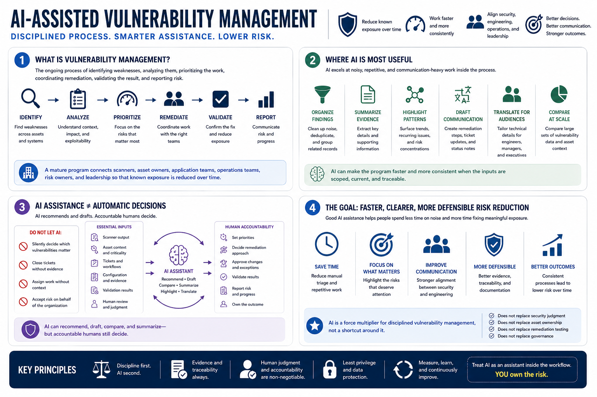

What AI-Assisted Vulnerability Management Means
Connecting to LMS... Progress: in progress

Narration
Vulnerability management is the ongoing process of identifying weaknesses, analyzing them, prioritizing the work, coordinating remediation, validating the result, and reporting risk. It is not just scanning. A mature program connects scanners, asset owners, application teams, operations teams, risk owners, and leadership so that known exposure is reduced over time. AI can help that process, but it should be treated as an assistant inside the workflow, not as the owner of risk.
AI is useful when the work is noisy, repetitive, and communication-heavy. It can organize findings, summarize evidence, group related records, draft remediation language, highlight patterns, translate technical details for different audiences, and help teams compare large sets of vulnerability data. It can make the program faster and more consistent when the inputs are scoped, current, and traceable.
AI-assisted vulnerability management is different from fully automated decision-making. A model should not silently decide which vulnerabilities matter, close tickets without evidence, assign work without context, or accept risk on behalf of the organization. Scanner output, asset context, tickets, configuration evidence, validation results, and human review remain essential. The model can recommend, draft, compare, and summarize, but accountable humans still decide.
The goal is faster, clearer, more defensible risk reduction. Good AI assistance helps people spend less time untangling duplicate records and more time fixing meaningful exposure. It improves the quality of communication between security and engineering, but it does not replace security judgment, asset ownership, remediation testing, or governance. Treat AI as a force multiplier for disciplined vulnerability management, not a shortcut around it.